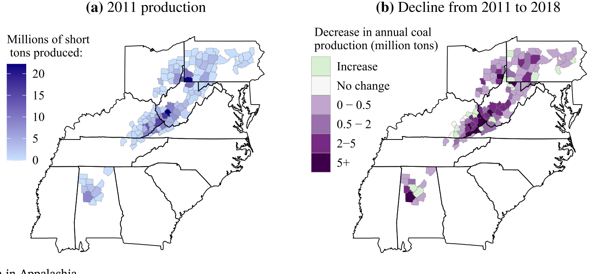
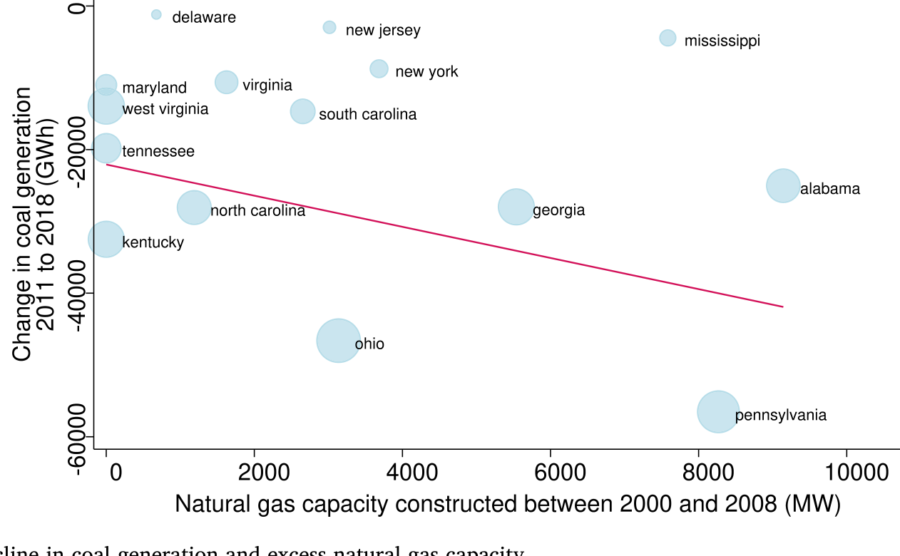
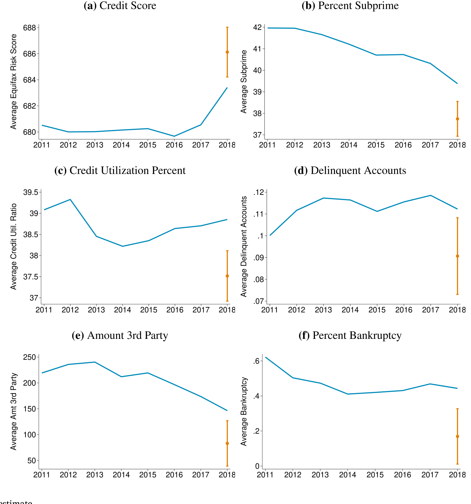
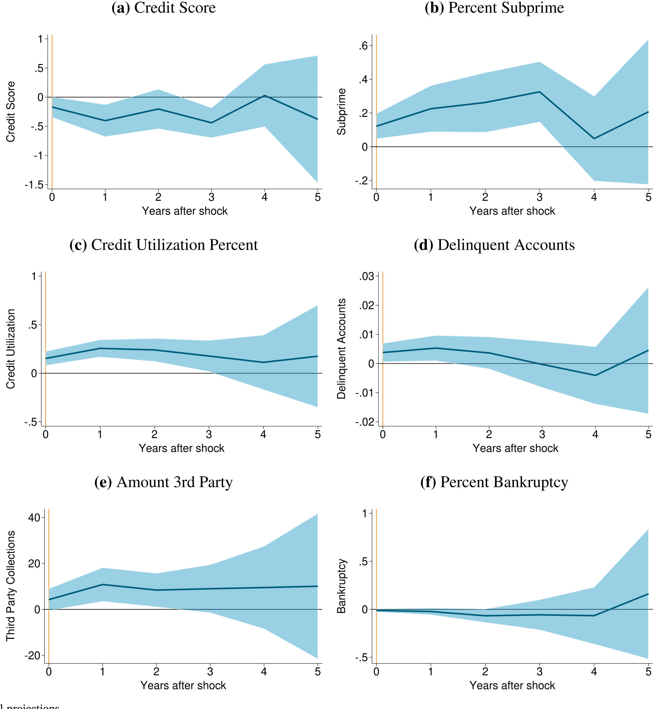
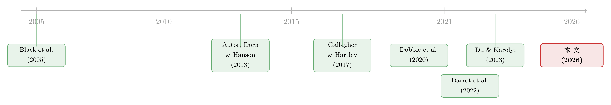

煤矿衰落里的「金丝雀」：一个产业退场，账单落到了谁的信用分上
本文读的是 Blonz, Roth Tran & Troland (2026, Journal of Financial Economics)：作者用美国个人层面的信用档案数据，配上一个建在「电力部门用煤需求」上的外生工具，证明阿巴拉契亚煤炭的衰落在两年之内就压低了当地居民的信用分、抬高了金融困境的发生率——而且这笔账远不止落在矿工头上。若没有这场需求下滑，2018 年这些县的平均信用分本应高出近 3 分，在次级 (subprime) 门槛附近更要高出约 7 分。
1 一个看上去不该成立的故事
先抛一个让人犯嘀咕的数字。
到 2011 年，在那些「还在挖煤」的阿巴拉契亚县里，煤矿业占当地就业的比例是多少？答案是——只有 2%。
这就奇怪了。一个只雇佣了 2% 劳动力的行业，就算它彻底垮掉，又能在当地家庭的财务账本上掀起多大的浪？直觉会告诉我们：影响应该小到可以忽略不计。煤矿衰退是个旧闻，阿巴拉契亚的煤炭就业其实已经萎缩了将近一个世纪——技术进步让矿企可以「用更少的人挖出同样多的煤」，1990 年代的空气质量管制又把需求推向了西部低硫煤产区。这些都是供给侧 (supply-side) 的老故事了。
但本文要讲的，是一个新故事，而且是一个反直觉的故事。
2011 到 2018 这短短七年间，因为水力压裂 (fracking) 让天然气价格暴跌、电厂纷纷弃煤改气，阿巴拉契亚的煤炭产量和就业分别跌掉了 40% 和 49%——几乎腰斩。这一次不再是周期性的「煤市寒冬」（boom and bust 里那个 bust），而很可能是一场不可逆的、朝着「去化石燃料」方向的结构性退场。
于是，一个真正要紧的问题浮出水面：当一个曾经是地方经济基石、却只直接雇佣了 2% 人口的产业开始永久性收缩，普通居民的钱包会不会跟着遭殃？如果会，有多快、有多痛、又落在了谁身上？
这就是「煤矿里的金丝雀」(canary in the coal mine) 这个比喻的妙处所在。本文把阿巴拉契亚当成一只金丝雀——它最早、最深地暴露在这场能源转型之中，它的反应预示着怀俄明、北达科他、二叠纪盆地 (Permian Basin) 那些更依赖化石燃料的社区，未来可能要面对什么。

Figure 1: Coal production in Appalachia
2 真正关键的一步：把「需求」从「供给」里剥出来
要回答上面的问题，最大的拦路虎是内生性 (endogeneity)。
设想一家煤矿公司在缩减产量。它会先关哪个矿？很可能先关那些工人工资最高、或者效益最差的矿——而这些选择本身就和当地的家庭财务状况纠缠在一起。换句话说，如果你直接拿「煤炭产量的下滑」去解释「信用分的下滑」，你根本分不清：到底是煤炭衰退伤了家庭财务，还是当地家庭财务本就不佳、顺带导致了某些矿被优先关停。产量是矿企选择出来的，它不干净。
接着，一个自然的问题是：能不能找到一个只跟「外部需求」有关、却跟「当地状况」无关的变量来代理对本地煤炭的需求？
本文最漂亮的一手就在这里。作者构造了一个新变量：以铁路计、方圆 200 英里内电厂每年消耗的煤炭量 (coal consumed within 200 miles by rail)。这个变量为什么能近似「对本地煤的需求」？两个理由环环相扣：
- 首先，阿巴拉契亚的煤绝大部分是被电力部门烧掉的；
- 接着，煤太重、运费太贵，一个矿能把煤卖给谁、不亏本地卖给谁，被运输半径牢牢锁死——离得远的电厂根本不在它的「客户名单」上。
但真正让这个变量「外生」的，是它波动的来源。样本期内，某个地区的燃煤量之所以一降再降，很大程度上取决于既有的发电基础设施：当天然气因压裂而变便宜时，那些早就建好了富余天然气产能 (excess natural gas capacity) 的电力公司，可以丝滑地从烧煤切换到烧气；而没有这套基础设施的电厂，想切也切不动。也就是说，本地煤需求的下滑速度，被一段先于本文样本期就已既定的工程史推着走——它和当地家庭今天的财务好坏，没有直接的因果通道。这正是排他性 (exclusion restriction) 论证的核心：影响家庭财务的唯一渠道，是经由煤炭需求本身。
下图把这个识别的「外生来源」画了出来——燃煤发电的下滑，与各地预先存在的过剩天然气产能高度相关。

Figure 2: Relationship between decline in coal generation and excess natural gas capacity
这其实是一种「需求侧的、由工程惯性驱动的」识别思路。它和经典的 Bartik/移动份额工具气质相通：把一个本地变量分解成「全国性冲击」（天然气革命）乘以「预先存在的本地暴露」（既有的燃气切换能力），从而把外生的那部分提取出来。
3 数据：把同一个人盯上好几年
识别策略有了，接下来是数据。
本文用的是 纽约联储/Equifax 消费者信用面板 (Consumer Credit Panel, CCP)——全美有信用记录人口的一个 5% 随机抽样。它的珍贵之处在于个人层面的面板 (panel)：能把同一个人在样本期里追踪好几年，看他的信用分如何起落。这一点是过去那一批「县级数据」研究做不到的。
具体口径上，作者把样本限定在居住于阿巴拉契亚活跃煤矿县、25 到 64 岁的劳动年龄人口（年纪太轻信用记录太吵，太老又快退休、对煤炭部门不敏感）。最终样本约有 150 万 个「个人-年」观测、超过 22.5 万 个不同个体。样本从 2011 年起，正是为了避开大衰退 (Great Recession) 的尾巴。
被解释变量是一组信用健康指标：核心是 Equifax 风险分 (Equifax Risk Score)（一个设计来预测「未来 24 个月内逾期 90 天以上」概率的专有评分），外加五个反映不同债务与困境阶段的变量——次级状态、信用利用率、逾期账户、第三方催收、破产。
光看描述统计就已经有故事了：活跃煤矿县居民的平均信用分是 678，低于全国的 686；次级人口占比 41.4%，高于全国的 38.5%。阿巴拉契亚本就比全国、甚至比其他农村地区更穷、更脆弱——这只金丝雀，底子本来就弱。
4 主要结果：两年之内，账单就到了
把外生的煤炭需求变量和个人信用面板对接起来，结果出来了，而且很快。
作者先用一个分布滞后模型 (distributed lag model)，再用 局部投影 (local projections, Jordà 2005) 交叉验证，两套方法给出的信用分下滑量级相当一致。核心结论有三层：
第一，效应是实打实的负向。 把估计反推成反事实 (counterfactual)：如果没有这场煤炭需求下滑，2018 年活跃煤矿县的平均信用分，本应比实际高出近 3 分。3 分听起来不多？但既有文献反复强调，哪怕平均信用分只动 1 分，在经济上都不是小事（关于「细小的信用分变化为何要紧」，正是 Gallagher & Hartley (2017)、Dobbie et al. (2020) 这一系这批研究的共识）。

Figure 5: Counterfactual estimate
第二，传导极快。 人们原本会猜：需求要先影响产量、再影响就业、再波及更广的劳动力市场、最后才轮到信用分——这一路下来总得拖好几年吧？但本文发现，从煤炭需求冲击到信用结果，最多两年（含冲击当年） 就走完了。局部投影把这个动态画得很清楚。

Figure 6: Local projections
第三，也是政策上最揪心的一点——痛感落在了「次级门槛」附近。 用无条件分位数回归 (unconditional quantile regression) 一看，煤炭衰退主要压低的是信用分中下段的人。在第 40 百分位上，信用分跌了整整 7 分，是平均效应的两倍多。而次级身份的分界线（660 分）恰好落在第 42 百分位附近——也就是说，最大的打击精准地砸在了「信用分稍微一动、就会从『能借到钱』掉进『借钱变贵、甚至借不到』」的那群人身上。这是一种残酷的非线性：同样掉几分，对高分人群无关痛痒，对临界人群却可能意味着信贷大门的关闭。
（关于「冲击如何不成比例地砸在信贷最敏感的边缘人群上」这一主题，可对照阅读《罚款本是好工具，为什么这次罚出了一场信贷退潮？》。）
5 于是反转出现：这不只是矿工的事
讲到这里，怀疑论者会反驳：信用分跌了，不就是因为矿工失业了吗？2% 的人丢了饭碗、还不起钱，仅此而已，谈不上什么「整个社区的代价」。
本文最重要的反转，正是回应这个质疑。
作者做了一个「信封背面 (back-of-the-envelope)」的测算：如果把效应全归因于煤矿工人家庭，这点人数根本撑不起观测到的总体信用分下滑。换句话说，影响溢出 (spillover) 到了那些并不直接挖煤的人身上——失去的服务业岗位、缩水的地方税收、连带变差的当地经济活动。一个只占就业 2% 的行业，却能在更广的社区财务里激起涟漪。这恰好解释了文章开头那个「看上去不该成立」的谜：直接就业份额小，不等于经济重要性小。
异质性分析进一步补全了画像：受伤最重的是婴儿潮一代 (Baby Boomers) 和 X 世代（年纪更大的人），千禧一代 (Millennials) 受影响有限；按居住地贫困率看，处在贫困率分布中段的社区最受伤——这与「信用分中下段最受伤」的发现互相印证。而信用分最高的那群人，顶多是信用利用率上升一点，逾期、催收、破产这些真正的困境指标几乎没动。
6 人会不会「用脚投票」？
最后还有一个绕不开的担忧：会不会是迁移 (migration) 制造了假象——好人都搬走了，留下的差人拉低了平均数，于是看上去像「信用恶化」，其实只是人口结构变了？
作者用县级回归回应：煤炭衰退没有改变净迁移 (net migration)，但降低了人口流动总量 (churn)——进出的人都变少了，这本身可能暗示着区域经济活力的下降。更耐人寻味的是，作者比较了两拨「搬离」阿巴拉契亚煤区的人：2011–2018 年（煤炭衰退期）走的，和 2002–2007 年（煤炭强劲期）走的。两拨人搬家后信用分都会立刻一跌（搬家本身就折腾），但衰退期离开的那拨，事后的信用分恢复明显更慢。作者很诚实地强调，这部分不是因果，但这条更糟的轨迹，很可能反映了这些人正是因煤炭衰退失了业、境况更差才不得不走。
7 文献脉络
把这篇论文放回它所在的学术谱系里看，会更清楚它的位置。
早期，研究阿巴拉契亚煤炭的，是一批用县级数据考察「周期性煤市起落」对就业、贫困、政府收入等本地结果影响的工作（Black et al. (2005)、Partridge et al. (2013) 等）。它们的局限在于：研究的多是临时性的繁荣与萧条，未必能告诉我们一场永久性转型意味着什么。
接着，是一条更宏大的「大规模经济转型」文献。最著名的是「中国冲击 (China shock)」系列——Autor, Dorn & Hanson (2013) 揭示进口竞争如何重创美国地方劳动力市场；其中 Barrot et al. (2022) 第一次把 CCP 这套个人信用数据用进来，研究进口冲击下家庭如何（主要借助房贷）来对冲。本文在方法论上正是这一支的「能源版」。
然后，是与本文最近的「能源转型的家庭与地方代价」这条新兴脉络：Du & Karolyi (2023) 发现煤炭县在 2012–2016 年的就业、工资、房贷申请相对下滑；Hanson (2023)、Krause (2023)、Kraynak (2023) 等也从不同角度切入。

本文所处的位置，是把上述三股力量拧到了一起：它继承了能源转型这条主线的问题意识，借来了中国冲击文献的个人信用数据，又用一个全新的、建在电力部门需求上的外生识别，第一次把焦点对准了家庭金融结果，并交出了「传导快、分布偏、有溢出」这三个新发现。它还和「家庭财务如何回应各类冲击」（自然灾害、最低工资、医保丧失等，如 Gallagher & Hartley (2017)、Dobbie et al. (2020)）这条大文献接上了头——能源转型，也是其中一种值得严肃对待的冲击。
评论与延伸（Q&A + 研究方向）
(a) 几个可能的疑问
Q：那个「200 英里内电厂用煤量」的工具，真的外生吗？会不会本地经济差，电厂也跟着少烧煤？
作者的论证不是「电厂用煤量本身外生」，而是「它的变动主要由先于样本期的发电基础设施（既有的燃气切换能力）和全国性的天然气价格冲击推动」。图 2 展示的正是这种「过剩天然气产能 → 燃煤下滑」的预定关系。只要这套工程禀赋不是因当地家庭财务前景而建的，渠道就成立。当然，这是一个可信但非铁证的假设，依赖于「基础设施先定」这一时序。
Q：3 分的平均效应，是不是小到没有实际意义？
单看平均数确实不大。但本文的重点恰恰是分布：临界人群跌了 7 分，且正好压在 660 的次级门槛上。再加上文献已反复表明 1 分的平均变动都有经济后果，所以「平均 3 分」是被严重低估了痛感的一个数字——它把高分人群的「无感」和低分人群的「剧痛」平均掉了。
Q：信用分下降，到底是收入减少，还是别的什么导致的？
作者探讨了收入与失业的角色，但坦承无法把机制完全拆干净——他们没有逐户的工资数据。能确定的是：效应不能仅由矿工家庭的失业来解释（信封测算撑不起），所以一定有更广的渠道（服务业岗位、地方财政、整体经济活动）在起作用。精确的机制分解，是留给后人的活。
Q：为什么受伤的是婴儿潮和 X 世代，而不是年轻人？
一个合理的解读是：年长者更可能深度嵌入本地（房产、长期债务、转岗困难），在结构性衰退里更难「重启」；年轻人则更容易迁移或转行。这与「衰退期离开者信用恢复更慢」的迁移证据也对得上——能走的、走得动的，和走不动只能留下的，命运分岔了。
Q：这套阿巴拉契亚的结论，能外推到石油社区（如二叠纪盆地）吗？
作者明确说这更像一个下界 (lower bound)：阿巴拉契亚样本期初煤炭只占 2% 就业，而 2018 年二叠纪所在区域采矿业占就业达
13%。对那些化石燃料就业份额更高、对单一行业依赖更深的社区，转型代价很可能更大。但前提是这些行业同样「地理集中、历史悠久、对社区经济举足轻重」。
Q：迁移分析既然「不是因果」，为什么还要放进来？
因为它要排除一个致命的替代解释——「信用恶化只是好人搬走后的组合效应」。作者证明净迁移没变（所以主结果不是组合偏差驱动的），同时又用「衰退期离开者恢复更慢」提供一个描述性、暗示性的旁证。把它定位成稳健性检验和补充叙事，而非因果主张，是恰当且诚实的。
(b) 几个可能的研究问题与提案
1. 煤炭社区的信用恶化，会不会沿着「公司债/地方债」往上传导？
【经济故事】家庭信用恶化、地方税基萎缩，理论上会抬高当地企业和市政当局的违约风险与借贷成本。金丝雀如果先在家庭层面发出信号，企业债与市政债的利差是否随后跟进？ 【可行性】中。需要把本文的外生煤炭需求冲击，匹配到 TRACE 的公司债交易与市政债数据，做事件研究或局部投影。难点是煤区上市发债主体偏少、市政债流动性差，识别要靠跨地区暴露差异。
2. 外资/机构持有人会不会在能源转型冲击中「先跑」，从而放大当地信用市场的流动性枯竭？
【经济故事】若煤区相关债券的边际持有人是对气候/转型风险敏感的外资或机构，他们的提前撤离会在需求冲击叠加之上，制造额外的流动性缺口——这正是金丝雀效应在信用市场的「二阶放大」。 【可行性】中。可用 eMAXX/持仓数据刻画煤敞口债券的持有人结构，配合本文的转型冲击做差分。识别在于「持有人构成」的预先差异是否预测了冲击后的利差与流动性恶化。
3. 信用分在「次级门槛」附近的非线性，能不能用断点设计直接量出来？
【经济故事】本文发现 660 门槛附近受伤最重。若能围绕这个监管/定价门槛做断点回归 (RDD)，可以把「跌过门槛」带来的借贷成本跳升单独识别出来，给「金丝雀之痛」装上一个更锋利的因果刻度。 【可行性】高。CCP 类数据中信用分连续、门槛清晰，660 是行业广泛使用的硬阈值，RDD 的连续性假设较易论证。主要工作量在数据获取与权限。
4. 把「金丝雀」前推：石油（二叠纪、巴肯）社区的家庭金融，对油价/钻机数冲击的弹性有多大？
【经济故事】本文自陈是下界。直接复制其框架到油气社区，构造类似的「外生需求」工具（如管道/炼厂产能的预定差异），可以检验代价是否真的「更大」。 【可行性】中。CCP 覆盖全美，油气县同样可识别；难点是为石油造一个像「200 英里铁路煤」那样干净的外生需求变量——石油运输与定价更全球化，外生性论证更难。
5. 「人口流动总量 (churn) 下降」是不是衰退社区的一个一般性信号？
【经济故事】本文发现净迁移不变、churn 却下降，暗示经济僵化。若 churn 的下降能稳健地领先于本地信用恶化，它或许是一个比净迁移更灵敏的「社区健康」高频指标。 【可行性】高。CCP 的地址变更可构造个人层面的迁移流，county-to-county 迁移矩阵也有公开数据；可做面板检验 churn 与后续信用结果的领先-滞后关系。
我的判断
这篇论文最大的贡献，是把一个被「就业份额只有 2%」这种表面数字掩盖了的代价，用干净的个人面板和一个构思精巧的需求侧工具量了出来，并交出了三个有政策含金量的事实：传导快（两年内）、分布偏（次级门槛附近最痛）、有溢出（远超矿工家庭）。把它定位成能源转型的「下界估计」与「先行金丝雀」，这个框架既谦逊又有前瞻性。
对识别，我最在意的还是那个工具的外生性论证——它依赖「发电基础设施先于样本期既定」这一时序，以及天然气价格冲击的全国性。这在 2011–2018 大体站得住，但若电力公司的产能布局本身就预判了煤区的长期衰落，外生性会被侵蚀；图 2 的相关关系是支持，却非铁证。其次，机制层面「收入/失业渠道」未能完全拆开，使得「为什么是信用分、而非别的」这一问还留着尾巴。
后续我最想看到的，是把这条「金丝雀」往信用市场（公司债、市政债、流动性）推一层——家庭层面的恶化会不会、以及多快地，沿着资产负债表向上传导。如果能在债券利差和流动性上找到同样「快、偏、有溢出」的印记，那么能源转型的财务代价，就不只是家庭的故事，而是整个区域信用生态的故事了。
参考文献
- Autor, D.H., Dorn, D., Hanson, G.H. (2013). The China syndrome: local labor market effects of import competition in the United States. American Economic Review 103(6), 2121–2168.
- Barrot, J.-N., Loualiche, E., Plosser, M., Sauvagnat, J. (2022). Import competition and household debt. Journal of Finance 77(6), 3037–3091.
- Black, D., McKinnish, T., Sanders, S. (2005). The economic impact of the coal boom and bust. Economic Journal.
- Dobbie, W., Goldsmith-Pinkham, P., Mahoney, N., Song, J. (2020). Bad credit, no problem? Credit and labor market consequences of bad credit reports. Journal of Finance 75(5), 1277–1419.
- Du, D., Karolyi, S.A. (2023). Energy transitions and household finance: evidence from U.S. coal mining. Review of Corporate Finance Studies 12(4), 723–760.
- Gallagher, J., Hartley, D. (2017). Household finance after a natural disaster: the case of Hurricane Katrina. American Economic Journal: Economic Policy 9(3), 199–228.
- Hanson, G. (2023). Local labor market impacts of the energy transition: prospects and policies. NBER Working Paper.
- Jordà, Ò. (2005). Estimation and inference of impulse responses by local projections. American Economic Review 95(1), 161–182.
- Partridge, M., Betz, M., Lobao, L. (2013). Natural resource curse and poverty in Appalachian America. American Journal of Agricultural Economics.